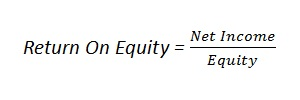

The return on equity ratio or ROE is a profitability ratio that measures the ability of a firm to generate profits from its shareholders investments in the company. In other words, the return on equity ratio shows how much profit each dollar of common stockholders’ equity generates, and is expressed as follows:
Examples (choose from the list or add a new one):
{% if form %} {% else %}| Year | Net income | Equity | Return on equity |
| {{ roe.year }} | {{ roe.net_income }} | {{ roe.equity }} | {{ roe.return_on_equity }} |